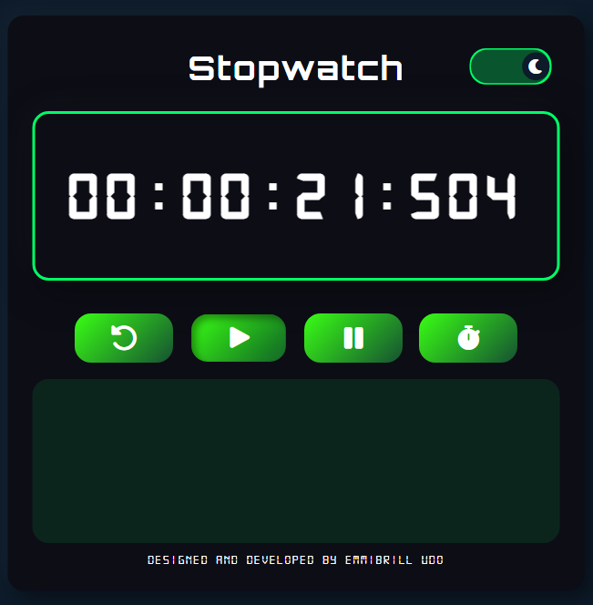
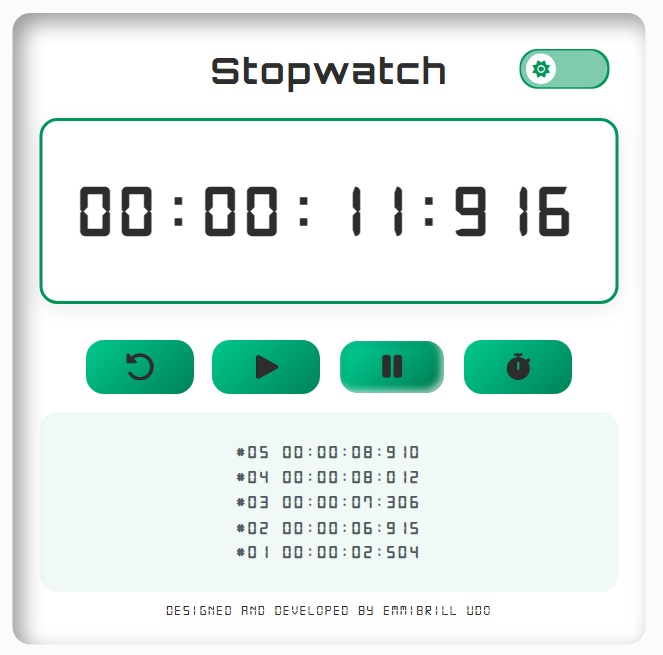
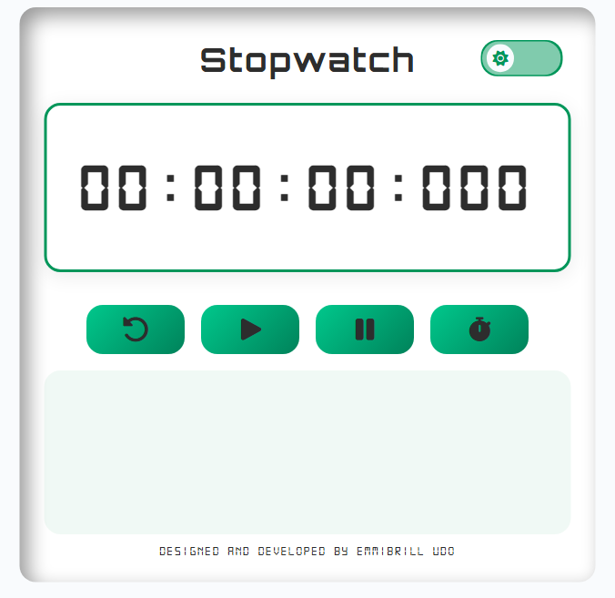
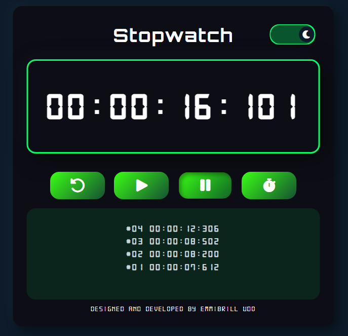

<!DOCTYPE html>
<html lang="en" id="portfolio-des-markup">
<head>
    <meta charset="UTF-8">
    <meta name="viewport" content="width=device-width   , initial-scale=1.0">

    <!-- Canonical tag (prevents duplicate confusion) -->
    <link rel="canonical" href="https://emmibrill.netlify.app/portfolio-des"/>

    <link rel="sitemap" type="application/xml" title="Sitemap" href="https://emmibrill.netlify.app/sitemap.xml">
    

    <meta name="author" content="Emmanuel Okokon Udo - Emmibrill Udo"/>
    <link rel="shortcut icon" href="static/images/my-avatar.png" type="image/x-icon">
    <link rel="stylesheet" href="https://cdnjs.cloudflare.com/ajax/libs/font-awesome/6.4.2/css/all.min.css" integrity="sha512-z3gLpd7yknf1YoNbCzqRKc4qyor8gaKU1qmn+CShxbuBusANI9QpRohGBreCFkKxLhei6S9CQXFEbbKuqLg0DA==" crossorigin="anonymous" referrerpolicy="no-referrer" />
    
    <!-- Custom CSS -->
    <link rel="stylesheet" href="static/css/portfolio.css"/>
    <script src="static/js/portfolio.js" defer></script>
    

</head>
<body>
    <div class="portfolio_case_study">

        <!-- <article class="project_description_card" aria-labelledby="project-title">

            <header class="case_study_header">
                <div>
                    <h1 id="project-title" class="title">Stop watch</h1>

                    <div class="tagline">A sleek and responsive web stopwatch built for accuracy, speed, and design consistency</div>

                    <div style="margin-top:10px;" class="badges">
                        <span class="badge"><p class="badge_child">Fullstack Developer</p></span>
                        <span class="badge"><p class="badge_child">HTML • CSS • JavaScript</p></span>
                        <span class="badge"><p class="badge_child">Web App</p></span>
                    </div>

                </div>

                <div class="case_study_nav_con" style="text-align:right">
                    <a class="case_study_nav" href="index.html">⟸ back home</a>
                    <a class="case_study_nav" href="about.html">about</a>
                </div>
            </header>

            <main id="case_study_main">
                <section class="project_overview">

                    <div class="overview_con">  

                        <h3>Overview</h3>

                        <p class="small">
                            EmmiStopwatch is a sleek, high-performance stopwatch web app that tracks 
                            time down to the millisecond. Built with HTML, CSS, and JavaScript, 
                            it emphasizes smooth performance, responsiveness, and a modern-inspired 
                            design that enhances user focus and usability.
                        </p>

                        <h3>Problem / Motivation</h3>

                        <p class="muted small">
                            This was actually a project exam given by my school, AltSchool Africa.
                            The task was to build a stopwatch that not only worked flawlessly but 
                            also delivered a clean, immersive experience. The goal was to 
                            demonstrate front-end precision, timing accuracy, and responsive 
                            UI behavior while refining my JavaScript event-handling and animation skills.
                        </p>
                    </div>

                    <div class="study_vid_con">
                        <video class="study_vid" autoplay muted loop playsinline disablepictureinpicture>
                            <source src="static/videos/stopwatch-case-study-video.webm" type="video/webm">
                            <source src="static/videos/stopwatch-case-study-fallback.mp4" type="video/mp4">
                        </video>
                    </div>            

                    <div class="feature_grid_con">

                        <h3>Core Features</h3>
                        <div class="feature_grid">
                            
                            <div>
                                <strong class="feature"><h4>Precise Time Tracking</h4></strong>
                                <p class="feature_des">
                                    Tracks hours, minutes, seconds, and milliseconds 
                                    in real time using JavaScript’s setInterval() and clearInterval().
                                </p>
                            </div>
                            <div>
                                <strong class="feature"><h4>Interactive Controls</h4></strong>
                                <p class="feature_des">
                                    Start, pause, lap and reset buttons with intuitive event-driven functionality.
                                </p>
                            </div>
                            <div>
                                <strong class="feature"><h4>Responsive Design</h4></strong>
                                <p class="feature_des">Fully responsive layout that adapts seamlessly to mobile and desktop screens.</p>
                            </div>
                            <div>
                                <strong class="feature"><h4>Smooth UI Transitions</h4></strong>
                                <p class="feature_des">Smooth transitions and minimal shadows to create a futuristic yet balanced interface.</p>
                            </div>
                        </div>
                    </div>


                    <div class="botton_con">

                        <h3>Technical Implementation</h3>
                        <p class="small muted">
                            The core logic uses JavaScript’s setInterval() to increment time values precisely, clearInterval() to stop the timer, 
                            updating the DOM dynamically. CSS gradients and transitions enhance the visual experience, 
                            while Flexbox ensures perfect alignment and spacing across viewports.
                        </p>


                        <h3>Challenges & Learnings</h3>
                        <p class="small muted">
                            Well, one challenge was ensuring that there was no flickering in the millisecond 
                            updates, especially during rapid start/stop actions, causing the container to shift.

                            I learned to optimize JavaScript’s interval logic for precision and ensure 
                            accurate resets without time drift. This project also reinforced my 
                            understanding of layout balance, user interface responsiveness, and the importance 
                            of subtle visual cues in functional design.
                        </p>


                        <h3>Outcome & Future Work</h3>
                        <p class="small muted">
                            EmmiStopwatch refined my front-end architecture thinking, 
                            proving how simplicity and precision can coexist in a modern web app. 
                        </p>

                    </div>
                

                    <div class="live_demo_btns" style="margin-top:14px">
                        <a class="link_btn" href="https://emmistopwatch.netlify.app" target="_blank" rel="noopener">Live Demo</a>
                        <a class="link_btn" href="https://github.com/Emmibrill/stopwatch" target="_blank" rel="noopener">Source</a>
                    </div>
                </section>

                <div class="side_wrapper">
                    <aside class="side_con">
                        <h3>Tech Stack</h3>
                        <div class="tech-list" style="margin-top:10px">
                            <span class="tech"><p class="tech_child">HTML5</p></span>
                            <span class="tech"><p class="tech_child">CSS3</p></span>
                            <span class="tech"><p class="tech_child">JavaScript</p></span>
                            <span class="tech"><p class="tech_child">Responsive Design</p></span>
                        </div>


                        <h3 style="margin-top:18px">Quick Facts</h3>
                        <p class="muted small">Role: <strong>Fullstack Developer</strong></p>
                        <p class="muted small">Team: <strong>Solo</strong></p>
                        <p class="muted small">Duration: <strong>3 Days</strong></p>
                        <p class="muted small">Tools: <strong>VS Code, Git, GitHub</strong></p>
                        <p class="muted small">Type: <strong>Web App</strong></p>


                        <h3 style="margin-top:14px">Contact</h3>
                        <div class="links">
                            <a class="link_btn" href="contact.html">Email</a>
                            <a class="link_btn" href="https://www.linkedin.com/in/emmanuel-udo-97820b235" target="_blank" rel="noopener">LinkedIn</a>
                        </div>

                    </aside>

                    <div class="aside_img_wrapper side_con">
                        <div class="aside_img_con"></div>
                        <div class="aside_img_con"></div>
                        <div class="aside_img_con"></div>
                        <div class="aside_img_con"></div>
                      
                    </div>
                </div>
            </main>


            <footer class="casestudy_footer small">
                <div>Made by <strong>Emmibrill Udo</strong> - <span class="muted">A passionate Fullstack Developer and Civil Engineer.</span></div>
            </footer>
        </article> -->

    </div>
</body>
</html>